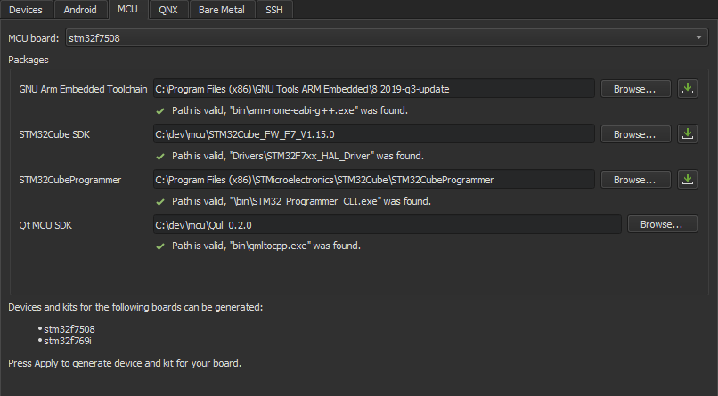
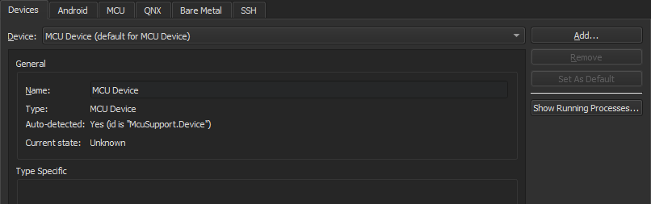
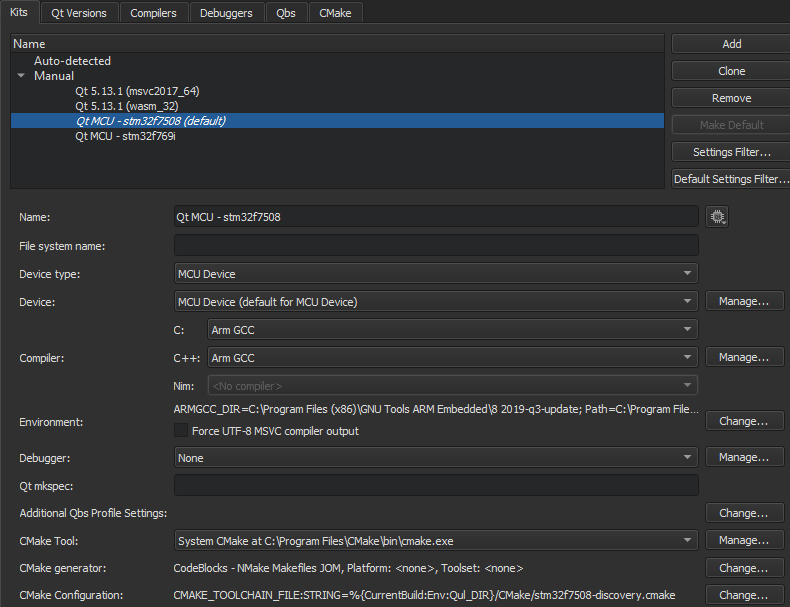

Connecting MCUs
Qt for MCU enables you to use subsets of QML and Qt Quick Controls to create user interfaces for devices that are powered by microcontroller units (MCU). It includes a new graphics rendering engine that has a low memory footprint and is optimized for MCUs and other resource-constrained devices.
You can connect MCU boards to a development host to build applications for them using the GNU Arm Embedded GCC compiler, libraries, and other GNU tools necessary for bare metal software development on devices based on the Arm Cortex-M processors. You can deploy the applications on MCUs to run and debug them using Qt Creator.
The toolchains are available for cross-compilation on Microsoft Windows, Linux, and macOS. However, the Qt for MCU SDK is currently only available for Windows.
The following MCU boards are currently supported:
For a list of Qt for MCU reference implementations, see the Qt for MCU documentation.
You use the Bare metal plugin to connect to OpenOCD or ST-LINK Utility for debugging on MCUs.
Requirements
To use Qt Creator to develop QML applications for MCUs, you need the following:
- Qt for MCU SDK (only available for Windows)
- The Bare Metal plugin
- GNU ARM Embedded Toolchain
- For STM32 boards:
- For NXP boards:
Setting Up the Development Environment
You must download and install the required software and create connections between Qt Creator and MCUs.
Enabling Bare Metal and MCU Plugins
To be able to develop for MCUs, you must enable the Bare Metal and MCU plugins:
- Select Help > About Plugins > Device Support > Bare Metal and MCU Support to enable the Bare Metal and MCU plugins.
- Restart Qt Creator to be able to use the plugins.
- Create connections for debugging on the MCU board, as described in Connecting Bare Metal Devices.
Specifying MCU Settings
To configure a connection between Qt Creator and your MCU board, select Tools > Options > Devices > MCU:

- In the MCU board field, select your MCU board.
- In the GNU ARM Embedded Toolchain field, specify the path to the directory where you installed the tool chain.
- For STM32 boards:
- In the STM32Cube SDK field, specify the path to the directory where you installed the SDK.
- In the STM32Cube Programmer field, specify the path to the directory where you installed the tool.
- For NXP boards:
- In the NXP EVKB-IMXRT 1050 SDK field, specify the path to the directory where you installed the SDK.
- In the SEGGER JLink field, specify the path to the directory where you installed the tool.
- In the Qt MCU SDK field, specify the path to the directory where you installed Qt MCU.
- Select Apply to save the settings and to generate a MCU device and kit.
Adding MCU Devices
Qt Creator automatically adds a default MCU device when you select Apply in the MCU tab after configuring the MCU tool chain.

To add MCU devices, select Tools > Options > Devices > Add > MCU Device > Start Wizard:
- In the Name field, give the device a name.
- In the Type field, select the board type.
- Select Apply to add the device.
Adding MCU Kits
Qt Creator automatically adds kits for building applications and running them on the specified MCU boards when you select Apply in the MCU tab after configuring the MCU tool chain.

To add kits, select Tools > Options > Kits > Add:
- In the Name field, specify a name for the kit.
- In the Device type field, select MCU.
- In the Device field, select the MCU board for the kit.
- In the Compiler field, select the Arm GCC compiler for the kit.
- Select Apply to add the kit.
Running Applications on MCUs
You can use a wizard to set up a project for developing an application that you can run on MCUs. The project uses a subset of QML and Qt Quick Controls that are supported by Qt for MCU. For more information about developing applications for MCUs, see the Qt for MCU documentation.
To create an application and run it on a MCU board:
- Select File > New File or Project > Application > MCU Support Application > Choose.
- Follow the instructions of the wizard to create the project.
- Select Projects > Build & Run, and then select the kit for building the application and running it on the MCU board specified in the kit.
- Select Run to specify run settings. Usually, you can use the default settings.